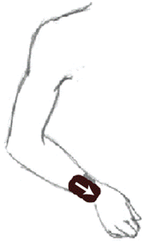
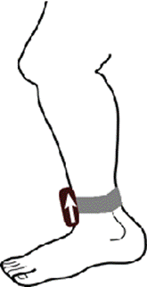
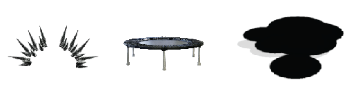

On this screen, you can visualize patient progress. First, choose a limb at the top, then choose a direction of movement in the submenu on the left.
1. Plug the receiver into your computer via USB.
2. If Windows prompts you that the device drivers failed to install, download the appropriate drivers at USB Receiver Drivers. At this point, Windows should recognize the device.
1. Install Adobe Air by following the instructions at the Adobe installation site.
2. Double click on ActiMo.swf file from the GitHub Folder and the application should launch within Adobe air. (NOTE: If it does not, you may need to change the file association by right-clicking and using the Open With.... command)
3. Install python by following the instructions at Python 2.7.5 release. This will require some knowledge of command prompt.
1. Simply flip the power switch on the top face of the ActiMo device to begin transmitting data to the computer.
2. Point the ActiMo at the screen from roughly where the child will be located. Press X on the windows remote to start the calibration while the ActiMo remains pointed at the screen. This should only take a few seconds.
3. Use the velcro strap to attach the device to the ankle or wrist with the power button opposite the contacting face and pointing towards the ground when standing in a relaxed state.

Create Profile: Create a new profile
Edit Profile: Edit the name on a profile
Delete Profile: Delete a selected profile

On this screen, you can visualize patient progress. First, choose a limb at the top, then choose a direction of movement in the submenu on the left.
1. In the main menu, select the button titled ‘Play’ and press X on the Windows Remote.
2. This will bring up a menu where all the games can be selected to be played. Select one and press X.
3. A menu will pop up where game options can be selected. Navigate the buttons using the windows remote. When a particular option is selected, the button will become highlighted.
4. Difficulty levels can also be selected here. The default difficulty is Easy. The difficulty makes different things happen in each game.
5. You must also select if the patient is using their right or left arm/leg.
6. Once ready with these selections, start the game by selecting ‘Done’ and pressing X!
7. A short tutorial will play to explain how to play the game. To skip this section, press S on the Windows remote.
-In the middle of the screen is the bamboo, pinata, or ball, referred to as the object
-In the top right is the object's health bar, which depletes as the player successfully swipes at the object
-In the top left is the player's score, which indicates how many objects they have destroyed
-Occasionally a timer will appear directly above the object, which indicates how much time the player has left to deplete its health
-Swipe the controller to hit (and eventually destroy) the target object. Swiping harder or with a larger range of motion will result in more damage to the target object.
-Certain target objects such as bamboo can only be be hit from a certain direction.
-Push the button X on the remote to bring up the mid-game menu. From here, you can resume, pause, change the difficulty or end the game.
1. Once ready, start the game by selecting a difficulty and pushing the play button.
2. A short tutorial will play to explain how to play the game. To skip this section, press X on the Windows remote.
-Kick your forward to launch the pumpkin. A stronger kick with a larger range of motion will result in a more powerful launch..

Interactive Elements: Spikes (Left); Trampolines (Center); Oil slicks (Right)
-The launch object will fly through the air and interact with the interactive elements. Spikes will stop the launch object’s flight, mini-trampolines will increase the height of the trampolines and oil slicks will increase the speed of the launch object.
-Push the button X on the remote to bring up the mid-game menu. From here, you can resume, pause, change the difficulty or end the game.
1. Plug male USB-A to USB-A cable into device and connect to wall charger or any other device with a female USB-A connection capable of outputting power. Charging will automatically terminate when battery is full.
1. Wipe gently with disinfectant or similar cleaning products.
2. Avoid excessive moisture or getting liquid inside the device. Dry promptly.
1. Keep the device below 105°F and 50% relative humidity. Excessive heat can cause the plastic to become soft and deform.
If on-screen movements seem incorrect...
Power cycle ActiMo by flipping the switch off and back on. Ensure that you are not within a foot of any electronics or sources of magnetic interference.
If ActiMo gets hot during charging or use...
Unplug and discontinue use. It is likely that the battery is shorted. Refer to the DIY section for battery replacement and either resolder the battery or replace it.